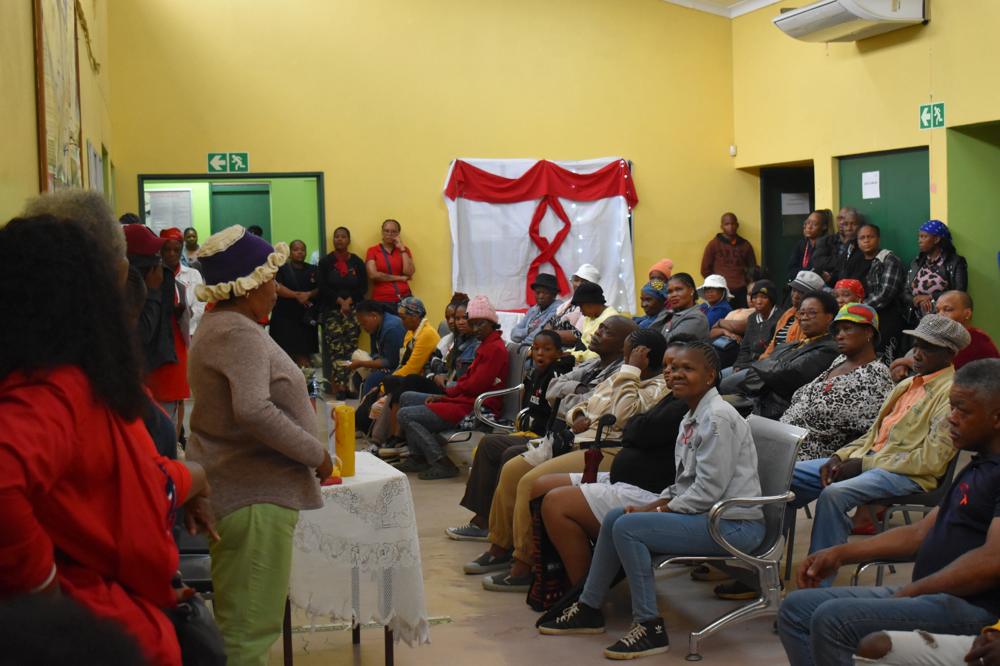
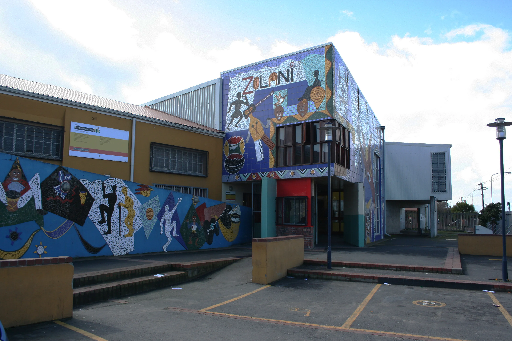

Five communities on the Cape Flats. Nine clinics. One growing network.
JAS Foundation is actively engaged in several communities across the Cape Flats — Athlone, Elsies River, Guguletu, Kenilworth and Manenberg — through a teaching clinic and the community clinics our trainees set up in their own neighbourhoods.
Athlone — the Teaching Clinic
The Teaching Clinic runs on the last Saturday of each month — earlier in December — and is open to everyone. Clients come from the surrounding neighbourhoods: Kewtown, Bridgetown, Manenberg, Silvertown, and Mitchells Plain.
It works like a teaching hospital: our trainees and practitioners treat clients under supervision while they learn. During 2025, they completed 274 sessions.
Community clinics — 2025 cohort
The 2025 cohort of trainees established five community clinics, and collectively completed 201 sessions. Each runs in partnership with a local organisation, in the trainee's own community.

Babsie's Health & Fitness Centre
Elsies River — a fitness centre opening its doors to community care.

Monica's Place
Grassy Part — a home that became a clinic.

Sisters Incorporated
Kenilworth — a shelter for women and children.

Madrassa tul Umahaad
Manenberg — care in the heart of the community.

Beitul Aman
Wynberg — a home for the aged, where gentle care is needed most.
Community clinics — 2026 cohort
The 2026 cohort trainees established four additional community clinics, taking the network further into the Cape Flats.
Rhenish Church
Elsies River — a congregation sharing its space.
Soup Kitchen
Guguletu — healing beside the people who come for a meal.

FG Lowe Village
Hanover Park — an old age home and frail care facility.
Druiwevlei Community Centre
Manenberg — a community centre opening to the people around it.
Where this is heading
A second Teaching Clinic opens in Khayelitsha during 2027, and the first Private Clinic in Wynberg — so the network keeps growing, and the training keeps being paid for by the work itself.
Help us reach the next community
Every community clinic runs on the generosity of people like you — and on the trainees who set it up in their own neighbourhood.
Donate to a clinic